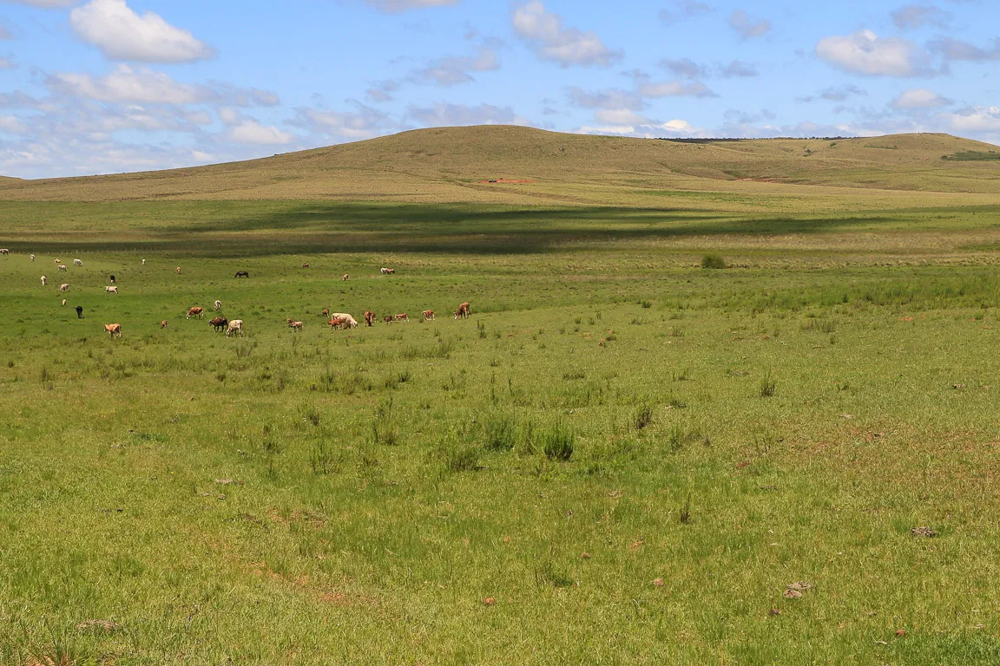

PAMPA
O Pampa é uma vasta região de planícies localizada principalmente no sul do Brasil, mas também estendendo-se para o Uruguai e a Argentina. Este bioma é caracterizado por sua vegetação de pastagens naturais, conhecidas localmente como "campos". O Pampa é amplamente utilizado para pastoreio de gado e agricultura, especialmente na produção de arroz e soja. Além disso, é lar de uma rica diversidade de vida selvagem, incluindo aves, mamíferos e répteis adaptados às condições das planícies abertas. No entanto, enfrenta desafios como a fragmentação do habitat devido à expansão agrícola e a perda de biodiversidade associada.
